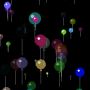

gamesballoons.kbs

Fill the sky with animated semi-transparent balloons. Requires BASIC-256 0.9.9.28 or higher.
{kind=link}
# gamesballons.kbs by: lrcvs, UglyMike
# 2013-01-07
# updated version with transparent baloons for 0-9-9.28
CLG
PX = 800
PY = 700
GRAPHSIZE PX, PY
BALLONS = 200 #BALLONS
R = 20 # RADIO
DIM P (BALLONS,7)
FOR V = 0 TO BALLONS - 1
P[V,0] = PX/2 # INIT POSITION X
P[V,1] = PY + (RAND * 100) + 1 # INIT POSITION Y
P[V,3] = R / 20 # SPEED Y
P[V,6] = RAND * 256 # Transparency value
P[V,4] = rgb(RAND * 256,RAND * 256,RAND * 256, P[V,6]) # ARGB COLOR
P[V,5] = R # RADIO
R = R - 1
IF R = 2 THEN R = 20
P[V,2] = ((((RAND ) * 2)-1)*P[V,5])/20
#if V % 2 = 0 then P[V,2] = (((RAND ) * -1)*P[V,5])/20 #SPEED -X
#if V % 2 <> 0 then P[V,2] = ((RAND )*P[V,5])/20 # SPEED +X
NEXT V
k=1
FASTGRAPHICS
print "Press any key to stop"
while key = 0
COLOR rgb(0,0,0)
#:::::::::::::::::::::::::::::::::::::::::::::::::::::::::::::::::::::::::::::::::
#Options:
#COLOR rgb(0,0,0) # <<< 1) With black color background , the color contrast is very greater.
#COLOR rgb(255,255,255) # <<< 2) With white color background, the transparency is perfect!!!, (in some balloons you see only sticks).
#COLOR rgb(50,100,255) # <<< nice blue sky
#:::::::::::::::::::::::::::::::::::::::::::::::::::::::::::::::::::::::::::::::::
RECT 0,0,PX,PY
FOR N = 0 TO V - 1
if ((P[N,0] + P[N,2]) < PX) and ((P[N,0] + P[N,2]) > 0) then
P[N,0] = P[N,0] + P[N,2]
else
P[N,2]=-P[N,2]
P[N,0] = P[N,0] + P[N,2]
endif
P[N,1] = P[N,1] - P[N,3]
COLOR P[N,4]
CIRCLE P[N,0],P[N,1],P[N,5]
poly {P[N,0], P[N,1]+P[N,5] ,P[N,0]+P[N,5]/4 ,P[N,1]+P[N,5]+P[N,5]/3, P[N,0]-P[N,5]/4, P[N,1]+P[N,5]+P[N,5]/3}
spec= int(P[N,5]/4)
color grey
line P[N,0],P[N,1]+P[N,5]+P[N,5]/3,P[N,0],P[N,1] + 4*P[N,5] # <<<<<< New line!
color rgb(255,255,255,P[N,6])
circle(P[N,0]-1.5*spec),(P[N,1]-1.5*spec), spec
if P[N,1] < (-100) THEN P[N,1] = PY + (RAND * 100) + 1
NEXT N
REFRESH
end while
END
gamesballoons.kbs.txt · Last modified: 2013/01/07 17:34 by admin